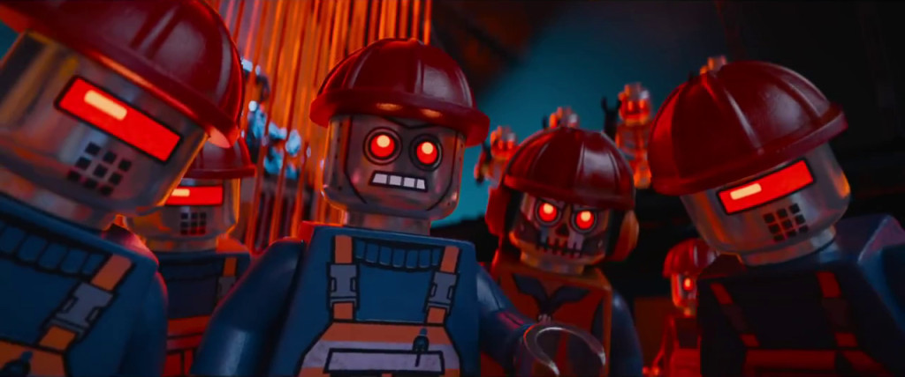
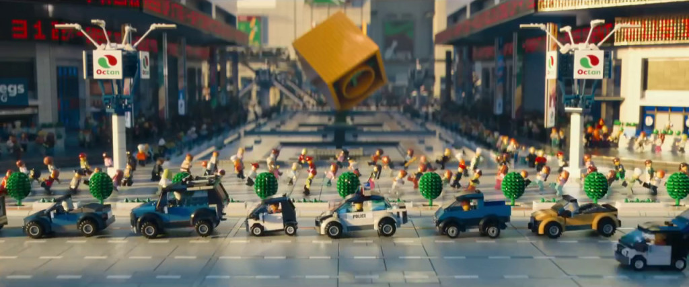
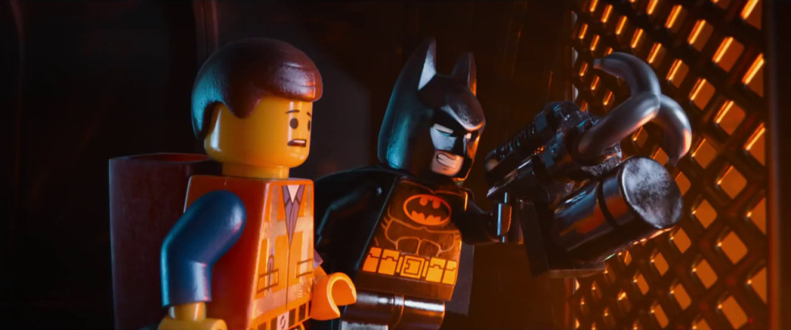

“The LEGO Movie” (2014) [SPOILERS]
We can all breathe easy — “The LEGO Movie” is actually pretty cool.
Here at The Set Bump, we’ve been keeping tabs on the progress and development of The LEGO Movie for a while, compiling what morsels of information we could to try and satisfy our curiosity. The announcement of the film (waaay back in 2009) left many unanswered questions in our minds — what would a LEGO motion picture even be about? Would it be done in stop-motion? Could it possibly be as boring as Clutch Powers?
Fear not, dear readers, for we now have answers and so much more. Sound the spoiler alarm (I’m about to spoil pretty much everything), and let’s dive on in.
Story
The LEGO Movie tells the story of Emmet Brickowski, a construction worker minifig who lives his average life in the average LEGO city of Bricksburg. Using very familiar-looking instruction booklets, Emmet helps build skyscrapers for the Octan Corporation, under CEO President Business.
But President Business has a secret alter-ego: Lord Business, a tyrannical despot with designs to conquer the entire LEGO universe by — what else? — gluing everything together.
Fortunately, a group of minifig Master Builders (i.e. our main cast and some licensed supporting cameos) has found the key to foiling Lord Business’ plan: the fabled “Piece of Resistance”. Unfortunately, that piece just happens to be glued to Emmet’s back. And thus, the odyssey begins…
There’s a larger story at work in The LEGO Movie, too (both figuratively and literally), but I’ll get to that.
Characters
Emmet (Chris Pratt) is the focal character of the film. Pratt plays the LEGO everyman to a T — his mastery of goofy charm (refined in his role as Andy Dwyer on “Parks & Recreation”) makes him a perfect fit to carry a LEGO film.
Emmet’s a simple fellow, but his eagerness and sincerity make his adventure a joy to watch. And in the standard “hero’s journey” manner, he picks up a variety of allies along the way…
- Vitruvius (Morgan Freeman) is the wise old sage and inveterate foe of Lord Business. Having failed to protect the LEGO universe in the past, Vitruvius foretells of a prophesied chosen one — “The Special” — who will unlock the key to Lord Business’ eventual defeat.
- Wyldstyle, aka Lucy (Elizabeth Banks) is an ambitious and headstrong Master Builder, who’s actively trying to become The Special by finding the Piece of Resistance. You may remember my considerable dislike for the name “Wyldstyle”; fortunately, it turns out the movie agrees with me (via lots of “what are you, a DJ?” jokes at her expense). For better or worse, a lot of Wyldstyle’s character centers around a sort-of love triangle (a “like triangle”?) between her, Emmet, and her current boyfriend…
- Batman (Will Arnett) is the Dark Knight as a hilarious parody; as if the Christopher Nolan films featured Adam West-inspired dramatics. Arnett is perfect in this role, and although much of his funniest material is in the trailer, there is one great sequence where millionaire playboy Bruce Wayne becomes integral to the plot.
Other helpful side-characters include Benny, a 1980s-era LEGO spaceman who REALLY wants to build spaceships; Unikitty, an anime-esque cat/unicorn hybrid with some serious anger issues (and some terrific brick-built alternate faces); and Metalbeard, a giant cyborg pirate who holds Lord Business responsible for his half-minifig, half robot condition.
In the villains’ corner, there’s really only President/Lord Business (Will Ferrell); his underutilized right hand man, Good Cop/Bad Cop (Liam Neeson); and an endless supply of robot police, robot feds, robot swat teams, and robot skeletons as cannon fodder for our heroes.

And then, there’s “The Man Upstairs”…
Design
The design of The LEGO Movie is where things really shine; it’s an amazingly gorgeous film. Every single setting has beautiful detailing and tons of NPU, almost to the point where it becomes distracting. There are dozens of visual nods to LEGO fandom, builder inside jokes, and some great micro-scale gags. Dave pointed some of these out in his review of the trailer, but that’s really only a small fraction of the insane beauty the filmmakers have packed in. That ocean! (I can’t wait to pause and frame-by-frame my way through the Blu-ray.)

For those of you who were worried about the use of computer graphics over stop-motion, I can honestly say that the film does not suffer one bit for it. The framing of many of the shots, as well as the overall texturing and lighting of scenes, really gives you that tactile feeling of being immersed in a brick-built LEGO world. There are one or two shots where the scope of what you’re looking at belies the film’s tiny toy-scale nature, but these are few and far between.
In many ways, the design of The LEGO Movie feels like not only a celebration of LEGO products and the hobby as a whole, but also of the craft of animation. Every major animation technique is at work here:
- The stop-motiony quality to the cinematography and character movement really helps set this film apart from things like Clutch Powers and the other CG releases. It’s super fun, and it feels like LEGO. I’m sure this approach will inform many stop-motion brickfilms in the future, and I would also have no problem with it becoming the new paradigm for CG LEGO animation. (Please and thank you.)
- There’s also some fantastically fluid 2D facial animation on all of the characters. The CG artists went so far as to give depth to the “paint” of the character face designs, as if the faces had been printed on like real LEGO minifigs. As someone who’s spent hours and hours staring at minifig heads through a macro lens, I truly appreciate this consummate attention to detail.
- And then, finally, the CG polish and shine brings everything together.
There’s a fourth filmmaking medium in the film as well — live-action photography. This was another detail made public by the filmmakers early on, though no one really knew what the implementation of it would be. As it turns out, the live-action sections are where the real story of the film lives.
Themes
In a broad sense, The LEGO Movie is built around a few overall motifs:
- LEGO creations are not meant to be glued together, but to be continuously rebuilt into whatever cool models a creator can imagine.
- You don’t have to build the greatest creation ever, as long as you’re building together with the people you care about.
- Embrace the things that make you unique.
These are the main themes as depicted in Emmet’s character arc; though, as we find out, Emmet is not really the main character of this story.
About 2/3 of the way through the movie, Emmet sacrifices himself by tumbling out of Lord Business’ tower and down into a swirling vortex. Having blacked out, Emmet wakes up to find that he’s a toy LEGO minifigure in the human world, being played with by a young boy named Finn.
As the live-action scenes unfold, we come to understand that the events of the film up to this point have basically been a dramatization of Finn’s LEGO playtime scenarios. This makes sense as, earlier in the film, Emmet has a vision of “The Man Upstairs”, as illustrated by his mental construction of a distinctly humanoid hand. Additionally, Lord Business’ collection of non-LEGO human-scale artifacts (erasers, band-aids, highlighters, etc.) tells us that the LEGO universe must be somehow tied to our world.
Finn, however, is not “The Man Upstairs”. In a further twist (one which I found really enjoyable), it turns out that “The Man Upstairs” is actually Finn’s father, the real owner of the tables full of LEGO displays that make up the worlds of the LEGO universe. Finn’s father is quite unhappy, as those LEGO displays are part of his very adult hobby, and are NOT meant to be played with by Finn. When you consider the fact that Finn’s father — a businessman in a suit and tie — is also played by Will Ferrell, the central conflict and meaning of the story becomes unmistakably straightforward. Lord Business’ super-tall legs aren’t just for show.
(I’ve heard some comments from fans who question this portion of the film; saying that it’s a little insulting to AFOLs to be portrayed in such a way. Personally, I thought it was really funny.)
It’s at this point that The LEGO Movie becomes not only a action movie for kids, or a toy advertisement, but a fable about the relationship between AFOL and KFOL, parent and child. The film is fundamentally a feature-length “Build Together” spot — a series of LEGO TV ads that, perhaps coincidentally, began right around the time this film was announced.
A Few Gripes
I’ve already mentioned the somewhat distracting and complex artistry of the LEGO universe itself. The story, by contrast, is rather simplistic. To be fair, the way that story plays out doesn’t have a lot of padding or unnecessary scenes — everything is aptly cut — but it does feel slightly too fast-paced at times.
Which is crazy, considering the film runs for about 100 minutes in total. (Maybe I’m just getting old.) Plus, the notion that the entire tale comes from the imagination of a young boy really helps to lampshade a lot of the less satisfying story elements.
Another thing that made me a bit uneasy was the idea of “The Special”. I’m all for empowering kids to use their imaginations, but the word “special” is immensely overused in our cultural consciousness. As a concept, it just made me think of that line from “The Incredibles”:
When everyone’s super… no one will be.
However, given that the intent here is to embrace those things that make us individually special (and the fact that the prophecy is all but thrown out as malarkey in the third act), I’m willing to give The Special a pass, too.
The only thing in The LEGO Movie that I couldn’t find any rationalization for was the utter dearth of female characters. Seriously. Where are all the women?
- We’ve got Wyldstyle as the the only lady character with any real agency, though her role is not much more than that of Action Girlfriend.
- Unikitty (Alison Brie) is female, but is technically an animal and not a minifigure. Plus, she doesn’t come into the film until around halfway through, and even then, her presence is not terribly significant.
- Wonder Woman is on the poster, and they went through the trouble of casting Cobie Smulders in the role, but the only thing she does in the film was already shown in the trailer. I honestly can’t remember if she had more than one line of dialogue in the whole film. (EDIT 2/16/14: She speaks literally eight words in the entire film.)
If you ask me, an easy solution would have been to cast a woman in the role of Vitruvius. There’s honestly not much you would have had to change about the character. It’s great that we now have a recording of Morgan Freeman saying the words “Taco Tuesday”, but I would have gladly given that up to have this film pass the Bechdel test. Wyldstyle is essentially Vitruvius’ apprentice, and it could have been interesting to have a female-female relationship stand in contrast to the live-action father-son relationship.
Given the recent furor over LEGO Friends, and the fact that a lot of the film’s tie-in sets include female minifigures, I expected a lot more from The LEGO Movie in that regard. (EDIT: I feel like this girl might agree with me.) I think I might have cheered aloud when, towards the end, Will Ferrell tells his son that he’s going to have to let his sister play, too.
(Hilarious Duplo payoff notwithstanding, I don’t think it would have been too much to ask to actually see the sister on screen, though, even if just for a second. You can’t be what you can’t see.)
Putting it all together
One of the inside jokes of the LEGO fan community is that of the “Rainbow Warrior,” a name fondly given to those weird-looking multi-colored models we all built as children.
{kind=link}
In some ways, The LEGO Movie is a bit of a Rainbow Warrior itself. For one thing, it ably tackles the unique problem of tying all the disparate LEGO worlds together; presenting the various play themes as parallel dimensions (and eschewing the nonsensical “play themes as planets” approach that Clutch Powers attempted to put forth).
But more than that, it manages to capture the fun, ubiquitous crossover vibe of every child’s playroom. Batman shooting his grappling hook at the Millennium Falcon in order to steal some spaceship parts from Han Solo and Lando Calrissian? That scene definitely happened in my backyard when I was a kid — and it happened in this movie, too.

Similarly, I couldn’t help but react to every pop culture reference and film allusion —
- Terminator (“Come with me if you want to not die”)
- The Matrix (Real/dream world analogies, The One, and the “Think Tank” room)
- Total Recall (The “Think Tank” again)
- Robocop (“Where are my pants?” is this film’s “I’d buy that for a dollar”)
- Super Mario Brothers: The Movie (Random dancing as a way to disable enemy forces, “cause everybody loves to dance, that’s why.”)
- Star Trek (“The Kragle” might as well be “V’Ger“)
- Clash of the Titans (“Release the Kragle!”)
- They Live (The subtle “Conform!” propaganda posters, and a few of the skeletal robot feds)
- Hot Rod (I kept waiting for Batman to do this towards the end)
And that’s not even including the official LEGO licenses. In a normal film, such an overabundance of seemingly random references might have felt lazy or unwarranted; but here, they somehow felt justified. I’ve already referenced “The Hero’s Journey” in this review, and maybe that’s all too appropriate — the minifigure might be the most literal encapsulation of The Hero with a Thousand Faces ever.
Overall
If I haven’t made it clear already, I thought The LEGO Movie was really fun, well-made, and an absolute delight to watch. The stunning visuals alone make it worth the price of admission, but the story is efficiently told and has some legitimate stakes, too. It’s not a perfect film, but as far as I’m concerned, there’s something for everyone to enjoy.
Those of us who do LEGO stop-motion (myself included) can admittedly be a bit snobby when it comes to the relationship between CG and “true” Brick Animation. When discussing brickfilms in interviews and at workshops, I tend to describe them thusly:
Brickfilms are a way for LEGO fans to tell their stories through the use of film and animation techniques. They can use any style, and can be about anything, but they all have one thing in common — the use of LEGO bricks and elements!
If that’s true, then I think it’s fair to say that The LEGO Movie qualifies as a brickfilm. Given the nature of the film’s story — a child whose imagined LEGO worlds are directly translated into on-screen action — The LEGO Movie might be the most ambitious, high-concept brickfilm ever. A meta-brickfilm, perhaps.
At the same time, The LEGO Movie also feels like a love letter to the entire brickfilming community. The directors have stated these intentions in interviews, but there was one other fun touch I noticed in the film’s live-action sequence: the aforementioned swirling vortex that Emmet tumbles down is, in the human world, an over-sized kaleidoscope with the words “Magic Portal” written on the side. Kind of reminds me of another Magic Portal…
But that’s not so important. What IS important is that this film is going to get a lot of people building. And animating. Heck, I left the theater and immediately went to the LEGO store to pick up one of the sets.
Go see The LEGO Movie.
Leave a Reply
You must be logged in to post a comment.